Meshy AI 3D Generator Review 2026: 60 Credits for One Usable Model
Meshy hides its Texture switch off by default, so my first paid run returned a white house. Then I measured how far the textures it finally produced drift from the photo — lights off, in CIE Lab. Scores, evidence, and what I’d use instead.
My verdict in 60 seconds — Meshy 60/100, SupaVoxel 90/100
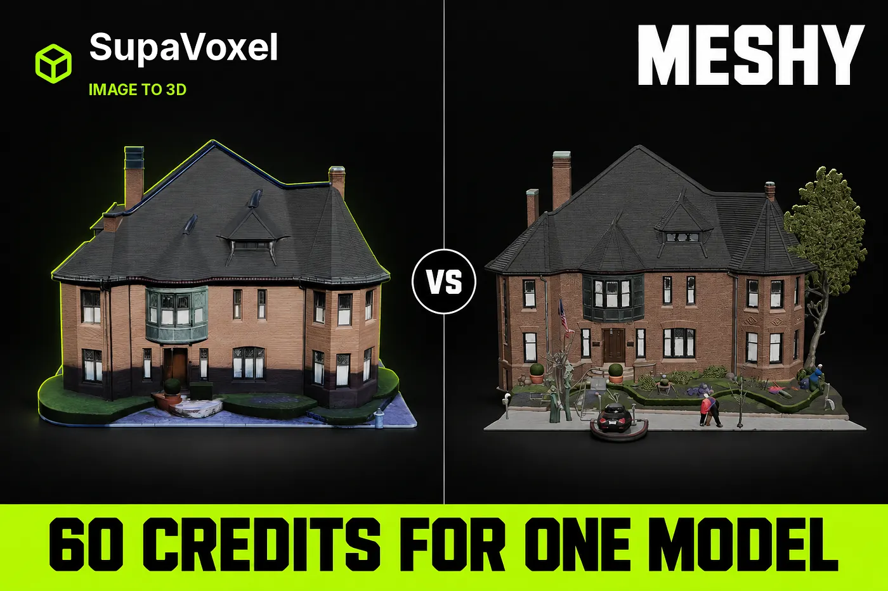
One photo of a brick house through Meshy 7.1 Flagship and through SupaVoxel, same day, same render rig, no lighting tricks. My scores and the specific defect behind each:
- First-run honesty — Meshy 1/10 · SupaVoxel 10/10. Meshy’s Texture toggle is off by default. The first run cost 25 credits and returned a white model with
textures = 0and no UV channel. The fixed run cost 35 more. First usable Meshy model: 60 credits. SupaVoxel: 3, in one click. That is a 20× penalty for one unchecked box. - Texture resolution — Meshy 2/10 · SupaVoxel 10/10. Meshy: 3 × 2048 px JPEG = 12.6 Mpx for the entire scene, shared with a tree, a car, two pedestrians and the sidewalk. SupaVoxel: 3 × 4096 px WebP = 50.3 Mpx, all of it on the building. 4.0× the pixels where they matter.
- Colour accuracy — Meshy 2/10 · SupaVoxel 9/10. Unlit albedo, sampled the same way: the photo’s brick is #d5ad91; Meshy bakes #83614d — ΔE(CIE76) = 29.7, lightness down 29.5 L\*. SupaVoxel bakes #b59783 — ΔE = 10.6. The visible threshold is about 2.3. Meshy’s error is 2.8× worse and changes what the wall appears to be made of.
- Signature detail — Meshy 2/10 · SupaVoxel 9/10. The building’s verdigris copper bay window comes back from Meshy as a near-black olive lump with the rosettes fused together.
- Close-range texture — Meshy 3/10 · SupaVoxel 9/10. Meshy’s mortar courses dissolve into embossed leather. SupaVoxel’s are still countable.
- Cost per usable model — Meshy 3/10 · SupaVoxel 10/10. 35 credits (or 60) against 3.
- Time estimates — Meshy 3/10 · SupaVoxel 8/10. Meshy’s texture pass: 4.5–10 minutes against a “2 min” quote. SupaVoxel: 4 min 55 s against “5–10 minutes”.
- Texturing ceiling — Meshy 8/10 · SupaVoxel 6/10. Credit where due: Meshy’s separate texturing tool does PBR maps at 2K/4K/8K if you drive it directly. The ceiling is high. The default is the problem.
For photographs of real buildings that have to end up as renders, my recommendation is SupaVoxel. Meshy will bill you twice, hand a quarter of its texture budget to a parked car, and bake your brick 29.5 points of lightness too dark. Evidence below.

The one input photo. The salmon-pink brick and the green copper bay window on the left are the whole test in this article.
The toggle that cost me 60 credits
I uploaded the photo to Meshy, left the defaults, pressed generate. Meshy took 25 credits and returned a white building.
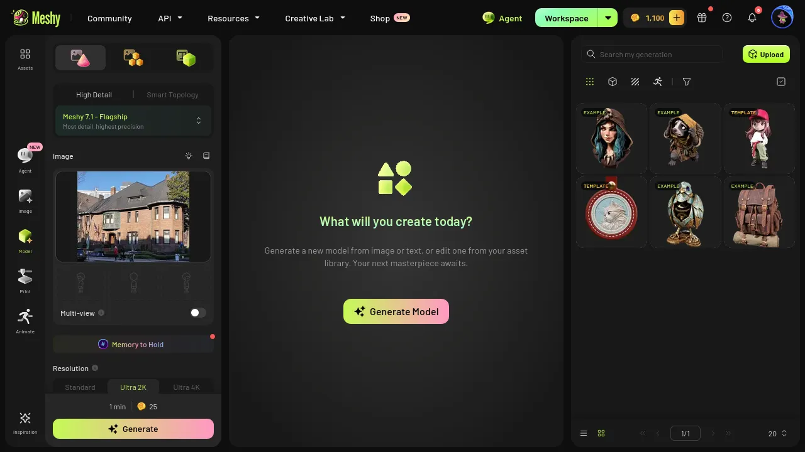
Meshy’s upload step. The button shows the credit price. Nothing says that on defaults this run comes back with no materials at all.
Meshy does not lie here — it shows the price up front, which many tools do not. But the button says “25 credits”, not “25 credits, no texture”, and a first-time user reading “image to 3D” does not expect a white box. I only confirmed it by opening the GLB: textures = 0, no TEXCOORD_0 channel. There was nowhere for a texture to live.
So I found the Texture switch, turned it on, and reran. That cost 35 credits — 25 geometry plus 10 texture, arriving as two separate charges. And it regenerates from scratch: you are not adding a texture to the mesh you already bought.
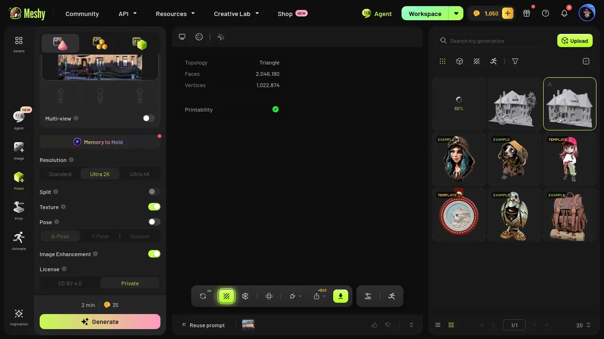
Run two on Meshy with texturing on. A second full generation, a second full charge.
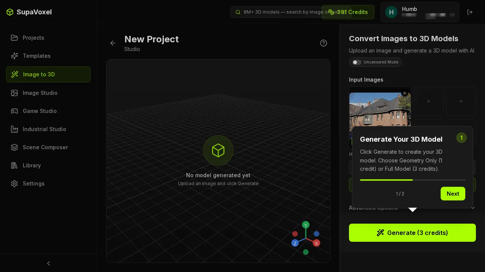
The same photo on SupaVoxel: one upload, one button, 3 credits, textured by default. There is no second step to miss because there is no second step.
The ledger, read from each product’s own balance:
- Meshy run 1 (geometry only): 1,100 → 1,075 · −25 · white model, no UVs
- Meshy run 2 (geometry + texture): 1,075 → 1,040 · −35 · usable model
- Meshy total to first usable model: −60 credits
- SupaVoxel: 391 → 388 · −3, one charge · usable model
On Meshy’s free plan — 100 credits a month — that one mistake is most of your month.
Where Meshy’s texture pixels actually go
The number that matters is not resolution, it is resolution per square metre of the thing you wanted:
- Meshy: 3 × 2048 × 2048 JPEG = 12.6 Mpx, and that atlas covers the house plus the tree, the car, two pedestrians and the sidewalk, because Meshy reconstructed the whole photograph into one mesh with one material.
- SupaVoxel: 3 × 4096 × 4096 WebP = 50.3 Mpx, all of it on the building, because nothing else is in the file.
Which is why these crops look the way they do:
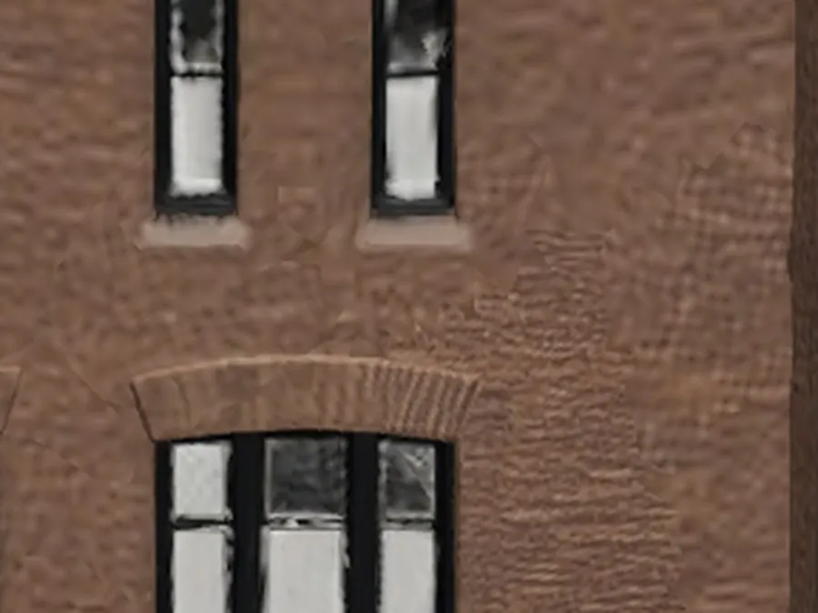
Meshy’s brick up close: courses dissolved into a soft embossed pattern. 2048 px spread over a whole street does not leave many pixels for mortar.
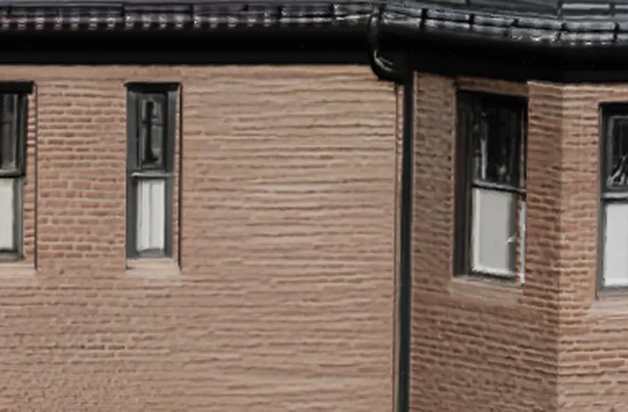
SupaVoxel’s brick from the same camera: individual courses still countable.
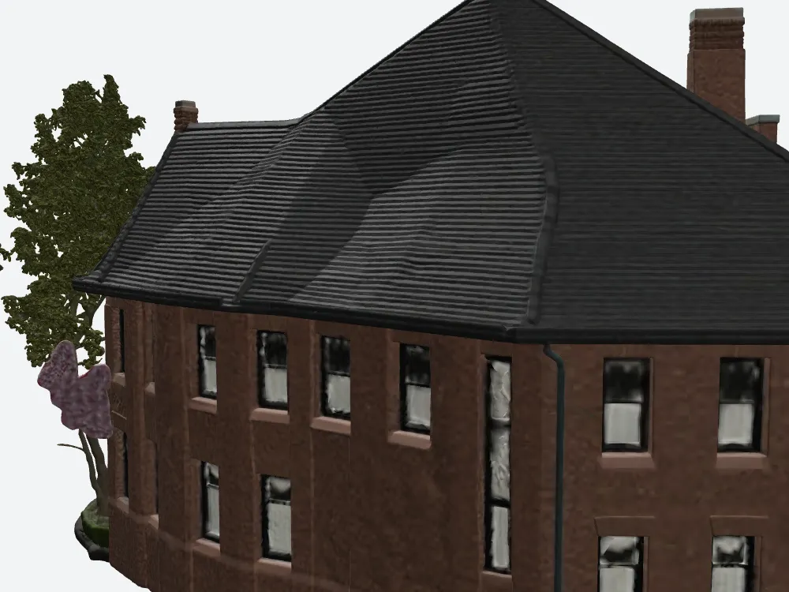
Zoomed on Meshy’s rear wall: brick stretched and smeared, windows reduced to blurs.
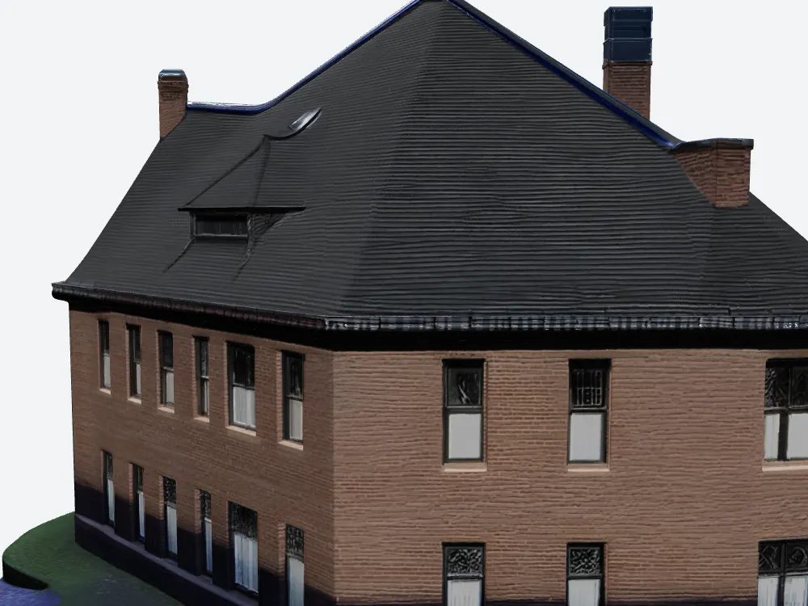
The same zoom on SupaVoxel: crisp brick from the 4K atlas. Its panes are painted rather than modelled — a deliberate trade, and the reason the file is 15.2 MB instead of 184.9 MB.
Lights off: measuring the colour drift without blaming my renderer
Any “your textures are too dark” claim invites the obvious reply: that’s your lighting. So I removed lighting from the test.
Both models were rendered in the same three.js rig in albedo mode: every material replaced with an unlit basic material carrying only the product’s own baked base-colour map. No lights, no tone mapping, no exposure, no grading. What you see is the texture Meshy wrote into the file.
Then, on the same wall patch in both:
- Keep only pixels with R > G > B, not too dark, not blown out — that drops glass, roof and sky and leaves brick.
- Take the median RGB of what is left, so outliers cannot move it.
- Convert to CIE Lab and compute ΔE (CIE76) against the same treatment of the original photograph.
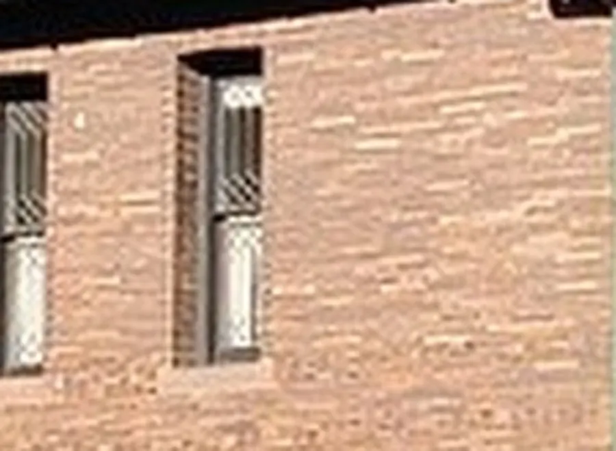
Reference: the wall in the source photograph. Median #d5ad91 — pale salmon brick with clear mortar lines.
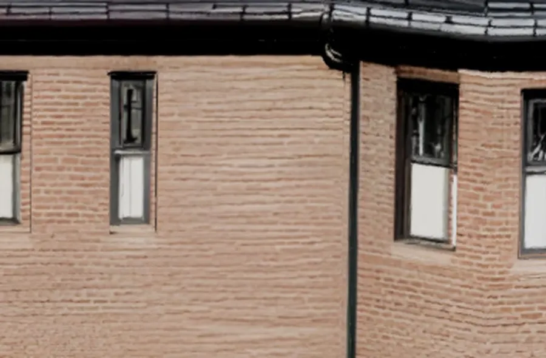
SupaVoxel’s baked albedo, unlit: median #b59783. Same colour family, a little darker. ΔE = 10.6.
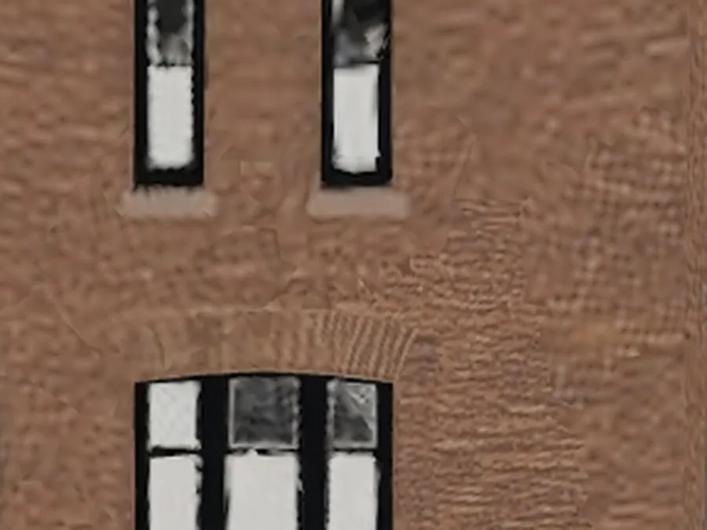
Meshy’s baked albedo, unlit: median #83614d — chocolate brown, mortar gone. ΔE = 29.7, 2.8× SupaVoxel’s error.
The numbers behind those three images:
- Original photo: RGB 213, 173, 145 · L\* 73.6 · a\* 10.6 · b\* 19.9 · reference
- SupaVoxel: RGB 181, 151, 131 · L\* 64.6 · a\* 8.1 · b\* 14.7 · ΔL\* −9.0 · ΔE 10.6
- Meshy: RGB 131, 97, 77 · L\* 44.1 · a\* 11.0 · b\* 16.8 · ΔL\* −29.5 · ΔE 29.7
Both darken the wall, but they fail differently and the hue channels prove it. SupaVoxel loses 9 points of lightness with hue almost untouched — a mild global dim you would not notice without the reference. Meshy burns off 29.5 points, roughly half the wall’s brightness. At an eye threshold of ΔE 2.3, one of these is “same brick, duller day” and the other is “different material”.
The verdigris bay window, executed
Every building has a feature the client points at. On this house it is the oxidised copper bay window — the cleanest single-object colour test in the set.
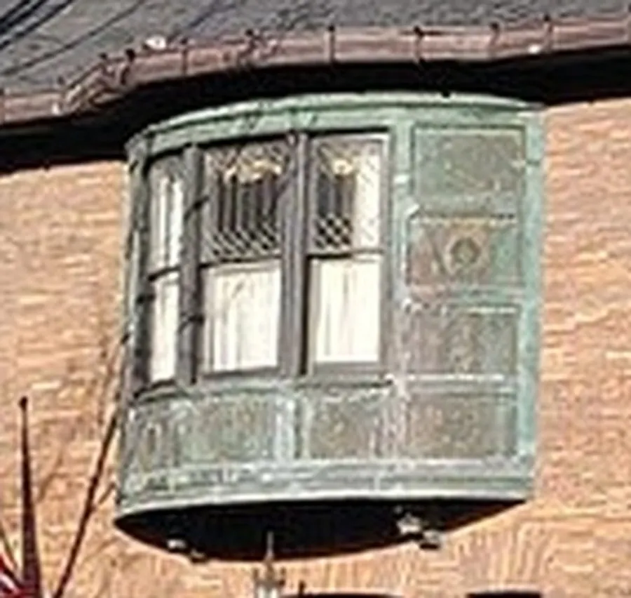
The real thing: green verdigris copper, vertical ribs, a row of square rosettes along the bottom edge, crisp brick either side.
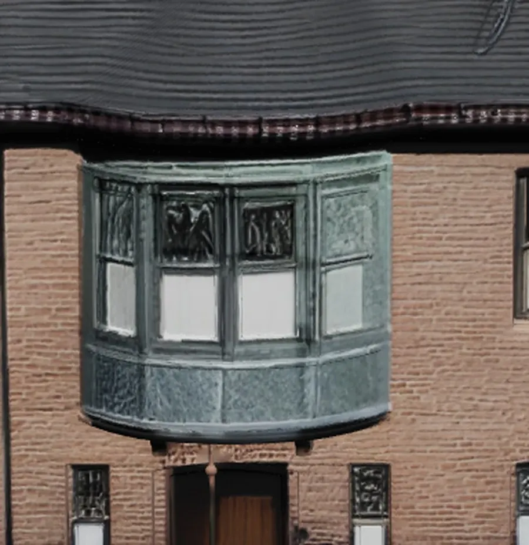
SupaVoxel keeps the verdigris green, the vertical ribs, the rosette band and the apron panel below the sill; brick stays readable on both sides.
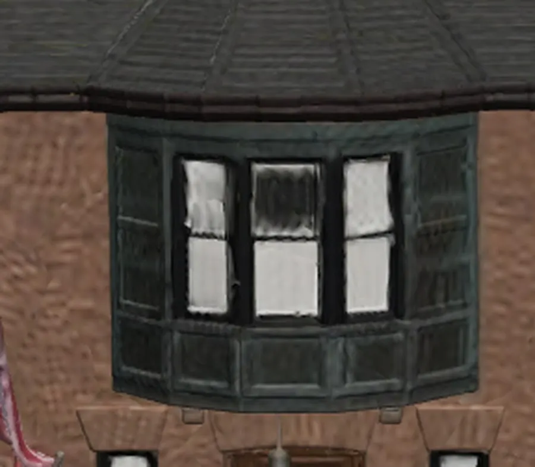
Meshy compresses the verdigris to near-black olive, fuses the rosettes into one raised lump, reduces the ribs to faint striping, and turns the surrounding mortar into lumpy render.
If your deliverable is an architectural visual, this is the exact moment the job changes from “export and render” into “repaint the copper by hand and colour-correct the whole building”.
Part of Meshy’s texture budget went to a parked car
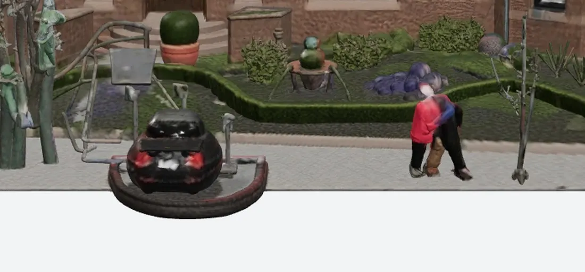
Every object here consumed part of Meshy’s 12.6 Mpx atlas: a car melted into a dark red beetle, two pedestrians as coloured posts with white blurs for faces, a sign, a lamp post, dead branches, purple blobs.
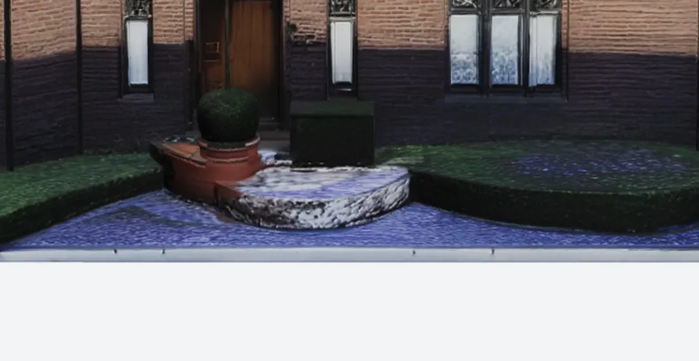
SupaVoxel’s frontage: car, pedestrians, sign and pole gone; steps, topiary and planters kept. Its 50.3 Mpx has only the building to cover.
That is the mechanism behind the softness. It is not that Meshy’s texture model is weak — it is that Meshy spends a small atlas on things you never asked for.
Scored as a render source
- Wall colour error (unlit albedo, ΔE76): Meshy 29.7 (L\* −29.5) · SupaVoxel 10.6 (L\* −9.0)
- Texture pixels on the building: Meshy — a share of 12.6 Mpx · SupaVoxel — all 50.3 Mpx
- Mortar at close range: Meshy — gone · SupaVoxel — countable
- Signature copper feature: Meshy — near-black olive lump · SupaVoxel — verdigris intact
- Can you shoot the rear elevation? Meshy — no, the rear roof has no dormer and the windows are smudges · SupaVoxel — yes
- Work before you can render: Meshy — cut out the clutter, rebuild the back, global colour correction · SupaVoxel — render it
Meshy pros and cons on texturing
Earned:
- Front-facade texture detail is excellent where the photo covers it — leaded glazing and the carved diamond brick band both survive.
- The separate texturing tool offers PBR maps at 2K/4K/8K, so the ceiling is high if you drive it manually.
- Credit costs are shown before you commit, and the geometry pass beats its own estimate.
- The untextured pass is a legitimately good massing model — if you know that is what you are buying.
Not acceptable:
- Texture off by default → 60 credits for a first usable model, 20× the alternative.
- 12.6 Mpx across an entire street scene, part of it on a car and two pedestrians.
- ΔE 29.7 on the main wall, half the brick’s lightness burned off.
- The copper bay window’s colour and detail destroyed.
- Texture pass 3–5× over its own time estimate.
Meshy pricing and what a textured building really costs
Meshy 2026–09: Free $0 / 100 credits per month, Pro $20/month / 1,000, Premium $40/month / 3,000, Ultra $100/month / 8,000, ~20% off annual, credits reset monthly, free downloads under CC BY 4.0 with a monthly download cap.
At 35 credits per textured building — 60 if the toggle catches you — that is 28 buildings a month on Pro, or three on Free. The same 28 buildings cost 84 credits on SupaVoxel, whose free tier is 3 models a day rather than 100 credits a month, and whose credits do not expire.
Final verdict: Meshy scores 60 — high ceiling, indefensible default
Meshy 7.1 is not bad at texturing. It resolves fine detail on any surface the camera saw, and its dedicated texturing tool goes to 8K with PBR maps. But the default image-to-3D path took 25 credits for a white model, then stretched 12.6 Mpx across an entire street, then baked the wall 29.5 L\* darker than the photograph and turned the building’s signature copper feature to olive-black. That is a 60.
Run the check yourself in an afternoon: export your Meshy model, render it with no lights, sample the wall, convert to Lab. The number will not flatter it.
The rest of this Meshy building test
Same photo, same two products, same day:
- The Back of the Building Is Missing — the reconstruction: no dormer on Meshy’s rear roof, rear windows degraded to smudges, and 4× the triangles buying worse topology.
- 185 MB Per House, $193 to Ship It — the shipping cost: zero compression extensions, 129 s on mobile, $193.90 a month of egress.
Use SupaVoxel for this job
Two Meshy defects decided it: a default that makes your first paid run untextured, and a small texture atlas shared with street furniture and baked dark. SupaVoxel answered both on the identical photo.
- 3 credits, one charge, textured by default — no toggle to miss, so no 60-credit first model, and up to 20× cheaper per usable result.
- 50.3 Mpx of 4K WebP entirely on the building — 4.0× the pixels, none of them spent on a car.
- ΔE 10.6 against the source photo, versus Meshy’s 29.7 — the brick stays brick and the copper stays verdigris, so you render instead of repaint.
- Clutter removed and the rear elevation completed with the same window parts as the front, so all four sides are shootable.
- Free tier of 3 models a day with no card, and credits that never expire against 100 monthly credits that reset.
The one thing I’d change: SupaVoxel paints window panes into the texture rather than modelling them, so an extreme close-up wants a little manual geometry. Next to repainting a whole facade, I’ll take it.
Text-to-3D work and legacy DCC pipelines still belong on Meshy. For turning photographs of real buildings into renders, spend five minutes on SupaVoxel before you burn a month of Meshy credits.